FIT5032 Asp .net develop 2022 s2
Create time: 2022-10-29 Last update: 2022-11-09
How to use the FIT study Note document#
- download the markdown file repository and navigate to the
docsfolder - view all the markdown files via Obsidian vault that can show the linked section in the note document

-
You may find some extra material or program template repository in the Course Brief introduction for the FIT Note markdown Document (some course don't have )
-
you can view the web page which transfer from MD file online but will lose the extra information or wrong markdown display
FIT5032 Course Brief introduction#
| week | Introduction |
|---|---|
| 1 | Intro to Web development and ASP.Net. |
| 2 | The Front End, UX, Accessibility and Scaffolding |
| 3 | Introduction to C# & Version Control |
| 4 | Entity Framework Scaffolding |
| 5 | Fundamental Client Side JavaScript (jQuery; datatable; calendar; maps; rich text) |
| 6 | Validation |
| 7 | Security & Microsoft Identity (authentication Login Roles) |
| 8 | Email, Upload & Signal R |
| 9 | Web Optimisations(Reducing HTTP Connections Reducing File sizes Caching Perceived improvements) & Evolution of ASP.NET CORE |
| 10 | Modern JavaScript Web Development Approach (AngularJS) |
| 11 | Testing and Deployment in Cloud |

This repository contents weekly task and my assignment template for FIT5032 - Internet Application Development done for the year 2022. (Semester 2)
Solutions are working out of the box. (Due to the nature of this unit)
You can run the project by running the .mdf files which are intentionally in the repository so that it would be working. (some parts are hidden for safety but not influence the framework working)
FIT5032 week 1 MVC & ASP .net#
Lecture Note#
- Introduction to Internet Applications Development
- Understand the purpose of ASP.NET MVC
- Understand the benefits of the MVC architecture
Q&A part#
★what is MVC#
- The Model-View-Controller (MVC) architectural pattern separates an application into three main groups of components: Models, Views, and Controllers 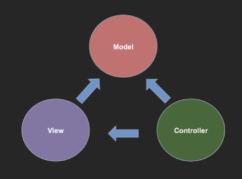
Which action in MVC request & response#

+ if no model in the project. The controller will received the user's command and return the result to the VIEW
Which functionality/files in each component of MVC?#

Model:
+ database
+ Defines the data validation rules
+ contains code that defines its relationship with other models
Controller:
+ Controls the application flow or logic of the application
+ decides what response is to be generated and passes the response (output) to the view
+ calls to model to access data
View:
+ View is the outputs or responses that are sent back to the user once a request is processed
+ the presentation layer of an application
+ Razor View in .net
What is Model? Functionality? Responsibilities?#
- A class or set of classes that describes all the business logic and additionally handles data access for an application.
- Also contains code that defines its relationship with other models.
- Defines the data validation rules to be used when adding or updating data.
What is Controller? Functionality? Responsibilities?#
- Controllers are the components that handle user interaction, work with the model, and ultimately select a view to render.
- Controls the application flow or logic of the application
- Controller logic decides what response is to be generated
- Controller logic normally contains calls to models to access data, and also other functionalities like access control checks etc
- Controller passes the response (output) to the view
What is View? Functionality? Responsibilities?#
- presenting content through the user interface. They use the Razor view engine to embed .NET code in HTML markup.
- Consist of markup (like HTML) code with embedded .NET code. Can also be other forms of output like XML, PDF documents etc.
- Views can be thought of as the presentation layer of an application and ideally should be as "dumb" as possible
★★ Advantages of ASP.NET MVC = Why use MVC? = MVC benefit#
- Enables the full control over the rendered HTML (前端可使用逻辑)
- Provides clean separation of concerns(SoC). (职能可分开)
- Enables Test Driven Development (TDD).(以method为单位 容易写test)
- Easy integration with JavaScript frameworks.(容易集成js框架)
- Following the design of stateless nature of the web. (网页不存数据从model拿数据，不记录用户状态及自身状态)
- RESTful urls that enables Search Engine Optimisation.(get post in url)
- No ViewState and PostBack events in comparison to ASP.NET Web Forms ()
★★★ Layers/Components in ASP.NET#
- Front End Technology (Razor)
- .NET (This will be the server side programming technology)
- IIS (This is the server itself)
- MS SQL Server
Separation of Concerns (SOC) 依据功能分成独立几个模块开发#

- 改变显示去view ， 改变数据多少去controller，改变数据结构去model
- Is a design principle for separating a computer program into distinct sections, such that each section addresses a separate concern.
- A concern can be as general as the details of the hardware the code is being optimized for, or as specific as the name of a class to instantiate.
- The value of separation of concerns is simplifying development and maintenance of computer programs.
- When concerns are well-separated, individual sections can be reused, as well as developed and updated independently.
- For example, user interface logic tends to change more frequently than business logic. If presentation code and business logic are combined in a single object, an object containing business logic must be modified every time the user interface is changed
Single Responsibility Principle (SRP) 每个模块如何划分 class， reuse#
- The single-responsibility principle (SRP) is a computer-programming principle that states that every module, class or function in a computer program should have responsibility over a single part of that program's functionality, and it should encapsulate that part.
FIT5032 Week 2 Usability#
Lecture note#
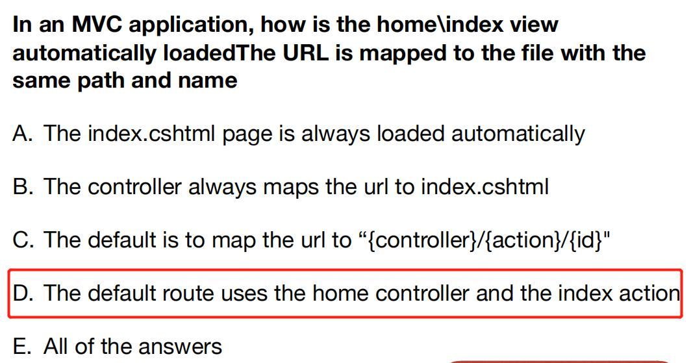


QA part#
★★★ The 6 Principles Of Design (Donald Norman 举例说明#
 Visibility
Visibility
+ 第一眼要看到所有的 link，并且之后 link 代表的含义
+ Users need to know what all the options are, and know straight away how to access them.
+ For example, on Moodle, the minute you login, it is immediately obvious what the possible options are
Feedback
+ 网站要针对用户的操作给出反馈，点击有反应
+ Feedback is when a system provides users with information about what has been completed or accomplished.
+ One example, is that on the Monash Home page, when the user uses the mouse to hover over the “Study” option, a drop down menu appears giving feedback to the users’ action.
Affordance
+ 图标的样式和功能相同，放大镜代表搜索
+ A situation where an object’s sensory characteristics intuitively imply its functionality and use.
+ When a control behaves as its appearance suggests
Mapping
+ 图标和文字相对应的表示 link/button 含义
+ Mapping is the relationship between control and effect. The idea is that with good design, the controls to something will closely resemble what they affect
Constraints
+ 在同一个页面上，减少和用户的交互（给用户尽可能少的选择）
+ UI 需要限制当前页面功能的个数，以及引导用户进行下一步操作
+ 单个页面的功能不宜过于复杂
+ Constraints is about limiting the range of interaction possibilities for the user to simplify the interface and guide the user to the appropriate next action
Consistency
+ 同级目录/button/link 样式要类似，例如，按 Link 通向相关页面，Button 提交 Action
+ Consistency refers to having similar operations and similar elements for achieving similar tasks. By leveraging consistent elements throughout your entire experience, you make your experience far easier to use
★★ Web Usability Guidelines (from Flow Bohl)#

★★★ How to handle request in ASP.Net MVC?#
- The default route table consists of one route.
 + Breaks all incoming requests into three segments (a URL segment is anything between forward slashes).
+ The first segment is mapped to a controller name,
+ Breaks all incoming requests into three segments (a URL segment is anything between forward slashes).
+ The first segment is mapped to a controller name, home student)
+ the second segment is mapped to an action name, about index
+ and the final segment is mapped to a parameter passed to the action named Id 123
How to combine controller and view/url together? / How to add new view binding with controller?#
[HttpPost]
public ActionResult Edit(Student std)
{// update student to the database
return RedirectToAction("Index");
}
Add Action Method, the name should be the same name as view name. and view folder name should be same as controllername

How to return the right view from controller method#
- If you want to return a view from a controller action, you need to create a sub folder in the Views folder with the same name as the controller.

- In this subfolder you need to create an .cshtml file with the same name as the controller action.
create/delete.cshtml
★★★ What is the role of the layout file in an ASP.Net MVC application? / How to design a website application in the same UI component, same heading image, same navigation bar?#
- Razor views use a layout to determine their look and feel
- render css and js in application level
- The default view is held in
Views/Shared/layout.cshtml - header; footer; navigation bar
How to render css/js in view/cshtml? (Defer JS)#
@Styles.Render("~/Content/css")
is rendered as
<link href="/Content/site.css" rel="stylesheet"/>
The lines
@Scripts.Render(“~/bundles/modernizr")
@Scripts.Render("~/bundles/jquery")
@Scripts.Render(“~/bundles/bootstraps")
are rendered as
<script src="/Scripts/modernizr-2.8.3.js"></script>
<script src="/Scripts/jquery-3.4.1.js"></script>
<script src="/Scripts/bootstraps.js"></script>
The JavaScript libraries for jQuery, modernizr, bootstraps are built into the MVC framework.
FIT5032 Week 3 csharp and git#
Lecture note#
- C# Basics: data types and operators
- C# Language Constructs
- introduction to Language Integrated Query (LINQ)
- Git
- 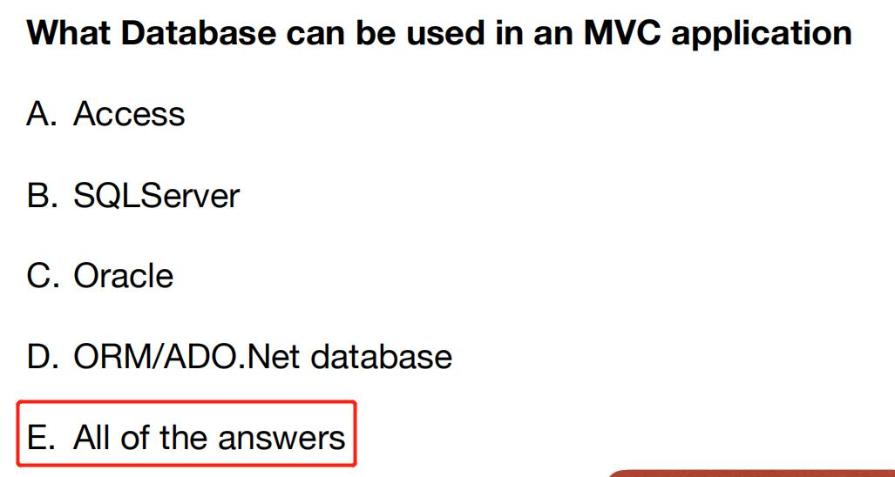
QA#
what is .net#
- .NET is a free, cross-platform, open source developer platform for building many different types of applications.
- C# is part of the .NET ecosystem
CLR, IL and JIT#
The Common Language Runtime (CLR)
+ manages the execution of all .NET applications
+ 掌控程序运行，例如 exception handler, 管理 code 等在运行期间的一系列问题
Intermediate language (IL) + Program – Intermediate Language – Machine Code + 在编译后转换成机器识别的语言
The JIT (Just-In-Time) compile + 在运行时 compile，有问题时报错或者 throw exception 实时编译
★ C#，Java , JS#
| feature | c# | java | js |
|---|---|---|---|
| Strongly Typed | y | y | |
| Object Oriented | y | y | |
| Component-oriented | y |
Object Oriented#
- Abstraction 抽象 interface
- Encapsulation 封装 class
- Inheritance 继承 super class
- Polymorphism 多态 override
★ Component Oriented Programming#
- 功能封装为Component 然后复用
- A technique of developing software applications by combining preexisting and new components.
- Heavily relies on: polymorphism, encapsulation, late binding, inheritance (through interfaces) and most importantly binary re-usability
Differ between ToString() & Convert.ToString()#
int age = 35;
string strAge1 = age.ToString();
string strAge2 = Convert.ToString(age);
Convert.ToString() function can handle null values
ToString() can not handle null values
★★ C# Comparison Operators#
== Equality
!= OR <> Inequality
< Less Than
> Greater Than
<= Less Than or Equal To
>= Greater Than or Equal To
?? null-coalescing operator.
It returns the left-hand operand if the operand is not null; otherwise it returns the right hand operand
?. Null-conditional operator
returns null if the left-hand operand evaluates to null
=> lambda operator.
It is used in lambda expressions to separate the input variables on the left side from the lambda body on the right side
# What is difference between String and string#
stringis just an alias ofSystem.Stringso there is no difference.stringis just a keyword mainly used in creating a variableSystem.Stringis a class which gives you a rich set of functions and properties to manipulate the string
C# Logical Operators#
&& And
|| OR
! NOT
★★Language Integrated Query (LINQ)#
- LINQ offers a consistent model for working with data across various kinds of data sources and formats.
- Always working with objects.
- All LINQ query operations consist of three distinct actions Obtain the data source; Create the query; Execute the query

★★LINQ VS SQL#
- Generally, when querying databases, LINQ is in most cases a significantly more productive querying language than SQL
- When it runs, LINQ to SQL translates into SQL in the object model and sends them to the database for execution. When the database returns the result, LINQ to SQL translates them back to objects

★★★FIT5032 Week 4 Entity Framework Scaffolding#
Lecture note#


QA#
what is Scaffolding? why use? benefit#
- A code generation framework for ASP.NET Web applications.
- Easy to add boilerplate code to your project that interacts with a data model.
- Can reduce the amount of time to develop standard data operations in your project.
- Can quickly add needed controllers and view that will interact with models
What is Entity Framework / benefit / Why use?#

- The Entity Framework is a set of technologies that support the development of data-oriented software applications.
- Entity Framework is an object-relational mapper (ORM) that reduces the impedance mismatch between the object-oriented world of .NET Framework developers and the world of relational databases
- It saves data stored in the properties of business entities and also retrieves data from the database and converts it to business entities objects automatically.
★★★What is ORM/Advantages and Disadvantages#
- Object-Relational Mapping (ORM) is a technique that lets you query and manipulate data from a database using an object-oriented paradigm


What are the Impedance Mismatch in ORM?#
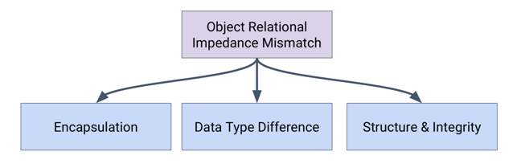 + Encapsulation – in OOP every class has internal and private implementation that is contained and maintained by the class instance. (RDMS uses “public” data 封装后 class中private的data 和function无法在DB映射 + Data type differences – no pointer/reference data types are allowed in the relational systems. oop中的数据类型(string int)在关系型数据库中会变成(varchar number) + Structure and integrity – in OOP it is considered normal to have highly nested structures (objects containing sets of different objects recursively, thus producing quite complicated object graphs).oop中的复杂嵌套关系，在数据库中可能无法正常转译
Core abilities in EF API#

What context class do in EF?#

public class AppDbContext : DbContext
{
public AppDbContext(DbContextOptions<AppDbContext> options)
: base(options)
{
}
public DbSet<Employee> Employees { get; set; }
public DbSet<Department> Employees { get; set; }
}
What is Entity in EF?#
- An entity in Entity Framework is a class in the domain of your application which is included as a
DbSet<TEntity>type property in the derived context class. - An Entity can include two types of properties: Scalar Properties and Navigation Properties
how to build model#
- database First Approach (This is where a database is created first using Data Definition Language. So, you are writing SQL first)
- Model First Approach (This is where a Visual Designer is used or the model is mapped out via XML configuration files)
- Code First Approach (This is when Code (C# classes) are written or created)
Development Workflow#

A General Guideline#

★ What is Model First Approach#
create the entities, relationships, and inheritance hierarchies directly on the design surface of EDMX and then generate the database from your model
draw table and relationship -> generate and execute SQL -> generate Model

★ What is Code First Approach#
Create Entity -> Create Context Class -> Generate Tables in DB

★★★Advantages and Disadvantages of Code First#
Advantages
+ Ability to “version” control database
+ Reduces the amount of automatically generated code significantly
+ A “developer” centric approach
Disadvantages
+ Difficult if new to the C# environment and already know SQL.
+ Heavily depends on the architecture of the systems in use, using it may be more difficult in scenarios where the database layer is important.
★ Advantages and Disadvantages of DB First#
Advantages
+ Assumes that the database design does not change over time.
+ Knowledge of SQL will make this task significantly easier in comparison to Code First.
Disadvantages
+ Requires an understanding of SQL to create the Database.
+ Changes to the database can negatively impact development as auto-generated codes may not be working as intended
+ Lack the correct annotation attributes (sometimes)
Inheritance Strategy#

Eager Loading and Lazy Loading#
Eager Loading
+ Eager loading is the process whereby a query for one type of entity also loads related entities as part of the query.
+ This is done so that we do not need to write a separate query for the related entity type.
+ Eager loading is achieved using the Include() method.
Lazy Loading + The loading of related data, only happens when it is request
FIT5032 Week 5 JS#
Lecture note#

QA#
★★ What is JS(JavaScript) / features#
- JavaScript is a lightweight, interpreted or JIT compiled programming language with first class function
- JavaScript is a prototype-based, multi-paradigm, dynamic scripting language, supporting object-oriented, imperative and declarative styles
★★ What’s difference between Server-side vs Client-side code? How can browser/ client PC run dynamic logic? Use JS#
- Client-side code is code that is ran on the user’s computer - when the page is viewed, the client side code is downloaded and then run and displayed by the browser. This is what we call client-side JavaScript. (write on html) (vue jquery)
- JavaScript can also be used as server-side.(write on mvc) Recently, there is a huge surge in the popularity of using JavaScript as server side code in the Node.js environment(Node.js)
★★ JavaScript Libraries and Framework#
- JavaScript library: pre-written JavaScript which allows for easier development of JavaScript applications. Examples of JavaScript libraries(jQuery d3.js) are
<script src="/Scripts/modernizr-2.8.3.js"></script> - JavaScript framework: A framework defines the entire application design. Examples of JavaScript frameworks are(vue react)
★★ Briefly describe how the bundling of CSS and JavaScript files is implemented in ASP.Net MVC applications#

How to add new external JS lib in .Net App?#
- js file to
Scriptsfolder; css file toContentfolder - configure those file in
BundleConfig.cs - import the bundle in
layout.cshtmlor other page@Styles.Render("~/Content/css")@Scripts.Render("~/bundles/modernizr")
Styles.Render() and Scripts.Render()#
link to section How to render css/js in view/cshtml? (Defer JS) + Style.Render is used to render a bundle of CSS files defined within BundleConfig.cs files. Styles.Render create style tag(s) for the CSS bundle + Scripts.Render is also used to render a bundle of Script files by rendering script tag(s) for the Script bundle.
★★ HTML defer#
- Scripts with the defer attribute are executed in order (i.e. first script 1, then script 2). This also does not block the browser.
- 延迟标签会按顺序激活
- 激活时机是在整体页面全部被 load 之后
- 缺陷：如果 JS 很多或者页面很大，页面延迟会特别高
<script src="path/to/script1.js" defer></script>
<script src="path/to/script2.js" defer></script>
★★ html async#
- Scripts with the async attribute are executed asynchronously.
- 异步标签控制 script 可以在下载同时解析之后的 tag（HTML）
- 使用场景，此 script 对页面的初次加载不是必不可少的，类似网页动画
- 缺陷：再有多个 JS 的时候，谁先下载完毕，谁先执行，没有 sequence 控制
<script src="path/to/script1.js" async></script>
<script src="path/to/script2.js" async></script>
<script async src="my.js"></script>
★★★ FIT5032 Week 6 Validation#
Lecture note#
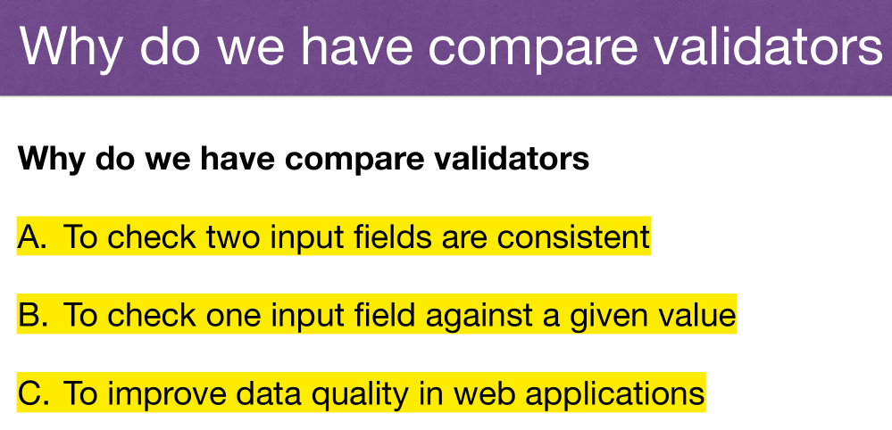

QA#
★★★ What is input validation? / Which data should be validated?#
- 所有用户/第三方所输入的数据必须要 validation
- correct format and data type
- not null fields
- data types dates, numeric and text fields
- data is within valid ranges e.g. age (ranges)
- specific format email addresses or post codes etc
★★★ What the purpose in input validation#
- Ensure backend/DB get the right format and legal data(range
- Validation to minimise security issues (SQL injection attacks)
Client side validation
+ Client side validation is recommended to reduce round trips to the server
+ before the data submit to the server eg ("Please enter a valid email address")
Server side validation
[Required]
[StringLength(100)]
public string Title { get; set; } = null!;
if (!ModelState.IsValid)
{ return View(movie); }
How many validations can we implement in the ASP.NET?#
 + there should be validation in the View layer, Control layer as well as the Model layer
+ View layer： JS, client side validation
+ Control layer: server side validation, form validation (HTTP post) 这个算 business layer validation
+ Model layer: Validation Attributes(Annotation), database table constraint （FK not found
+ there should be validation in the View layer, Control layer as well as the Model layer
+ View layer： JS, client side validation
+ Control layer: server side validation, form validation (HTTP post) 这个算 business layer validation
+ Model layer: Validation Attributes(Annotation), database table constraint （FK not found
Validation in Models#

+ Validation Attributes(Annotation), [Required(ErrorMessage = "Please Enter Name”)]
+ database table constraint （FK not found [DataType(DataType.Date)] [DataType(DataType.Date, ErrorMessage = "You can only enter date format")]
+ 
Validation in Views#
@Html.ValidationMessageFor(model => model.Name, "Please Enter a Name", new { @class = "text-danger" }
Regular Expressions#
^[A-Za-z]+\-{0,1}[0-9]*\-*[A-Za-z]+$

 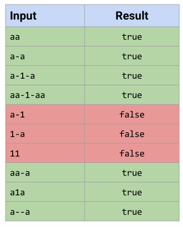
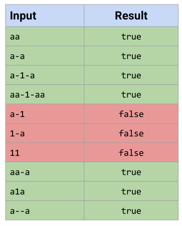

★★★How to bind data from http request to method parameters?#
 + Model binding in ASP.NET MVC maps data from HTTP requests to action method parameters.
+ The parameters may be simple types such as strings, integers, or floats, or they may be complex types
+ Model binding in ASP.NET MVC maps data from HTTP requests to action method parameters.
+ The parameters may be simple types such as strings, integers, or floats, or they may be complex types
POST + Viewmodel for frontend (can contain more than one table) + get input value to viewmodel (set username) + Post viewmodel to DB
★★ What is the sequence of server-side validation? why use server-side validation#
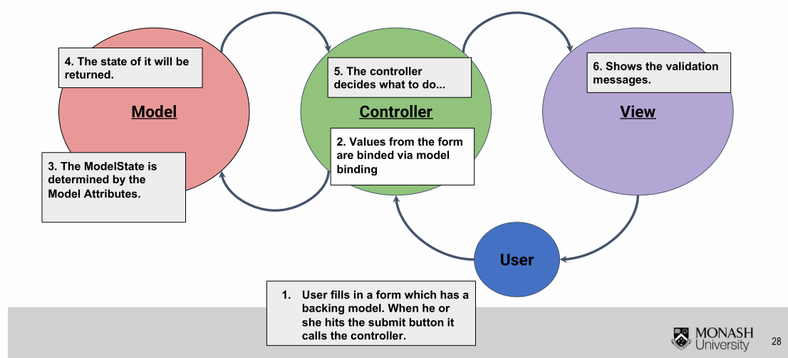 + The last layer to protect invalid data interact with DB 整个应用的最后一层防线 + Defined standard validation on model field, can be used in multiple views 定义 model & field 的标准 validation + Can use the jQuery unobstructive validation to generate client side validation automatically 在 client page/cshtml 自动生成 HTML（JS）代码实现 validation
if (ModelState.IsValid)
{
db.Patients.Add(patient);
db.SaveChanges();
return RedirectToAction("Index");
}
jQuery Unobtrusive Validation#
 + add validation to our MVC views without any additional client-side coding
+ In order words, once you have included server side validation via validation attribute, the client side scripts to validate the forms will be automatically generated
+ add validation to our MVC views without any additional client-side coding
+ In order words, once you have included server side validation via validation attribute, the client side scripts to validate the forms will be automatically generated
Client Side Validation#

 + the main reason client side validation is important is because it significantly increases the user experience. 增强了用户体验
+ Instead of making round trips to the server, users can get an instant feedback. 减少传输等待时间
+ Client side validation will also in a way offload the workload to the client instead of the server. 减轻了 Server 的负担
+ the main reason client side validation is important is because it significantly increases the user experience. 增强了用户体验
+ Instead of making round trips to the server, users can get an instant feedback. 减少传输等待时间
+ Client side validation will also in a way offload the workload to the client instead of the server. 减轻了 Server 的负担
<div class="editor-field">
@Html.EditorFor(model => model.Email)
@Html.ValidationMessageFor(model => model.Email)
</div>
Why we use client/view validation combined with server/model validation?#

ValidationMessage VS ValidationSummary / Why do we need customize validation message?/ How can we use customised validation message instead of model validation attributes message?#
Validation Error Messages
[Required(ErrorMessage="Please enter student name.")]
public string StudentName { get; set; }
@Html.ValidationMessageFor(model => model.Name, "Please Enter a Name", new { @class = "text-danger" }
Validation Summary
+ @Html.ValidationSummary(true, "", new { @class = "text- danger" })
+ A Summary of the Validation Errors (excluding those already given) can be made 显示所有错误消息
What function/UI component can implement usability in Web application#
Tool Tips
+ Displayed Text when user hovers over element
+ Implemented by Html title attribute
+ 
//method 1
@Html.TextBox("MyTextbox", new { title = "I'm a Tooltip!”})
//method 2
@Html.EditorFor(model => model.Name, new { htmlAttributes = new { title = "This is where you type in your name"} })
Tab Index
+ Allows a user to tab through user input fields in a specified order
+ @Html.EditorFor(model => model.phone, new { htmlAttributes = new { @class = "form- control", tabindex = 1 } })
Hot Keys
+ Hotkeys allow the user to jump to a specific input element based on the key pressed (e.g. ALT-d) 跳转到该view
+ @Html.EditorFor(model => model.todaysDate, new { htmlAttributes = new { @class = "form-control" , accesskey = "d" } })
FIT5032 Week 7 Security and Identity#
Lecture Note#
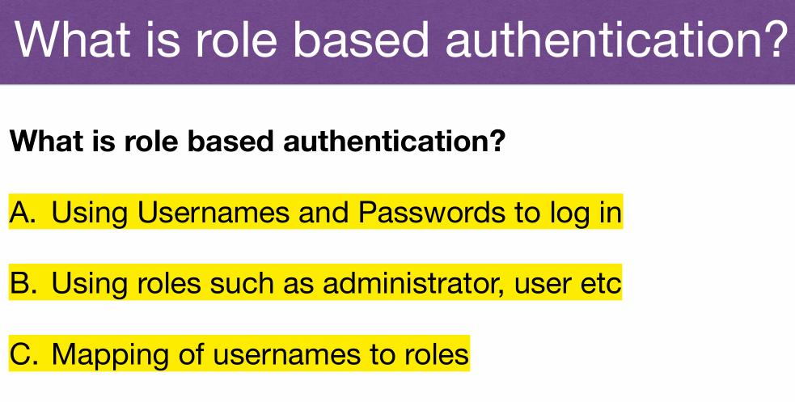

 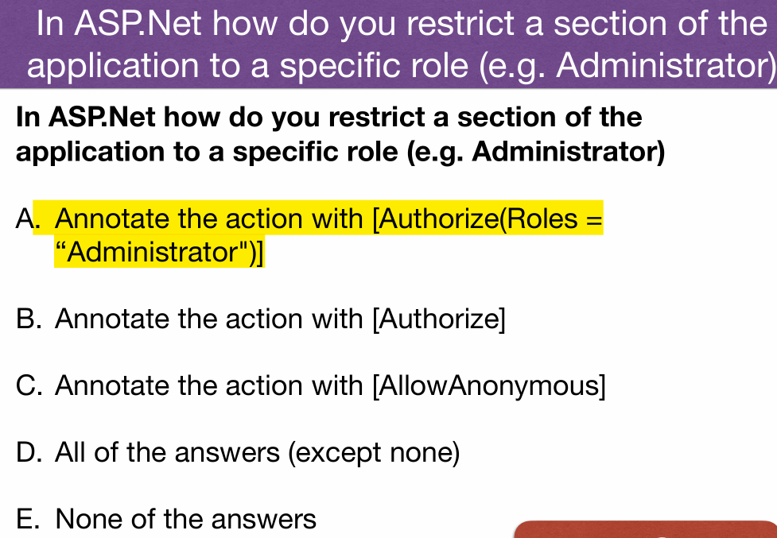
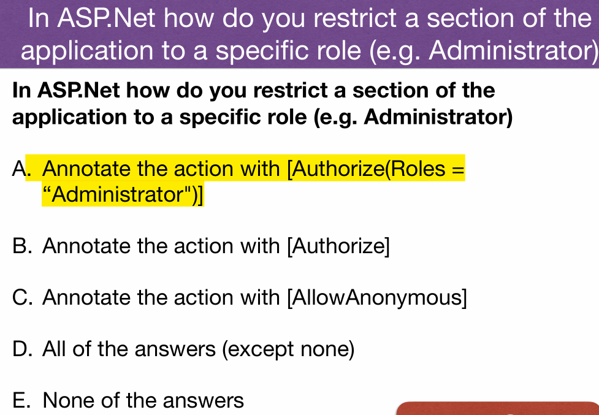
 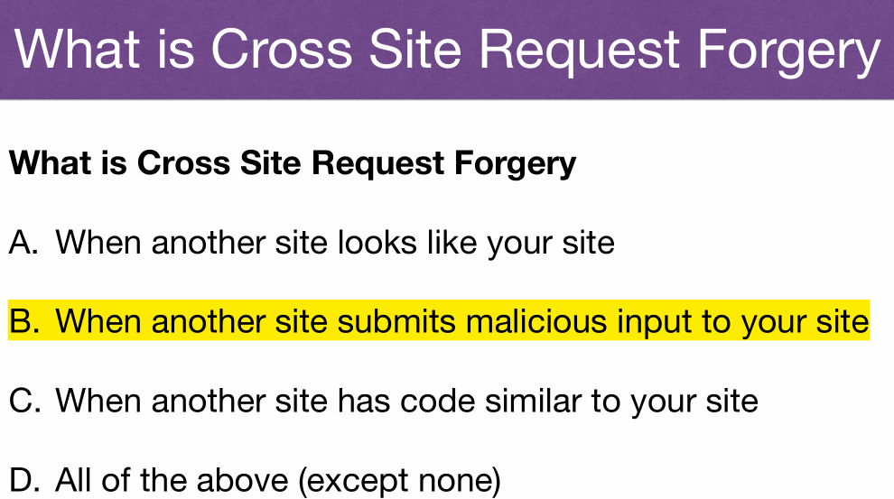
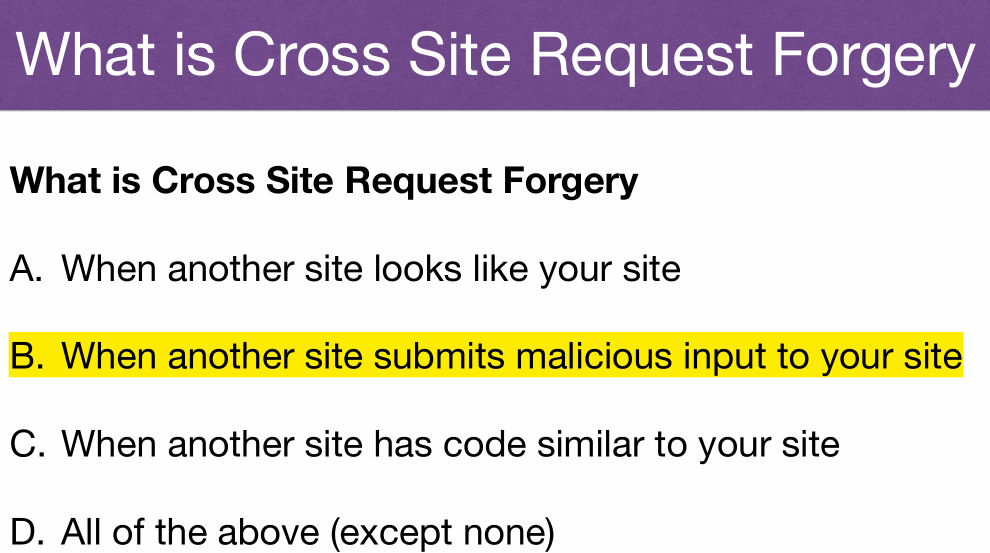
QA#
Top 10 Web Application Security Risks#

What is password hash? Why we use it?#
- When storing a password, hash it with a salt, and then with any future login attempts, hash the password the user enters and compare it with the stored hash.
- If the two match up, then it's virtually certain that the user entering the password entered the right one
E.g. Abcd = 》 sdkfjqwo123jlk... （a fixed length 256 or 512 bits - As hashed are inherently one-way in their nature, so even if data is exposed, hashed pwd cannot be exposed. This significant secure the data in DB
★★ Authorization(Role Func) vs Authentication(Login)#
- Authentication is the process of verifying who you are. When you log on to a PC with a username and password you are authenticating. Authentication is the process of ascertaining that somebody is really is who he claims to be.
- Authorization is the process of verifying that you have access to something.(
[AllowAnonymous]跳过验证阶段) Gaining access to a resource (e.g. directory on a hard disk) because the permissions configured on it allow you access is authorization. In short, authorization refers to rules that determine who is allowed to do what.
Multi-factor authentication#

 + The authentication factors must come from two or more of the following
+ something the claimant knows (e.g. a personal identification number (PIN), password or response to a challenge) (Something you know)
+ something the claimant has (e.g. a physical token, smart card or software certificate) (Something you have)
+ something the claimant is (e.g. a fingerprint or iris scan). (Something you are)
+ Advantages: password easy to loss 密码容易丢; provides additional security by adding protection in layers增加保护.
+ Users must carry a mobile phone, charged, and kept in range of a cellular network, whenever authentication might be necessary.需要带手机 The user must share their personal mobile number with the provider, reducing personal privacy and potentially allowing spam.需要共享号码
+ The authentication factors must come from two or more of the following
+ something the claimant knows (e.g. a personal identification number (PIN), password or response to a challenge) (Something you know)
+ something the claimant has (e.g. a physical token, smart card or software certificate) (Something you have)
+ something the claimant is (e.g. a fingerprint or iris scan). (Something you are)
+ Advantages: password easy to loss 密码容易丢; provides additional security by adding protection in layers增加保护.
+ Users must carry a mobile phone, charged, and kept in range of a cellular network, whenever authentication might be necessary.需要带手机 The user must share their personal mobile number with the provider, reducing personal privacy and potentially allowing spam.需要共享号码
★★ How to secure an Action/Controller?#
An Action (e.g. from the HomeController) can be restricted to logged in users Use the [Authorize] annotation
[Authorize]
public ActionResult Contact()
{ ViewBag.Message = "Your contact page.";
return View();}
Now the user must log in to access the Contact action
User Account Tables#

 The AspNetUser table has the details of the user that have registered
The AspNetUser table has the details of the user that have registered

in the AspNetRoles table We can specify roles in the application by adding entries

AspNetUserRoles table The Mapping of the Users to the roles is done 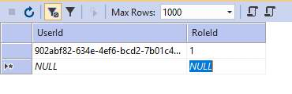
★★ How to secure Actions/Controllers based on role?#
Use [Authorize(Roles = “Administrator”)] name of the roles are your choice.
[Authorize(Roles = “HRManager,Finance")] HRManager or Finance roles can access
[Authorize(Roles = “PowerUser")]
[Authorize(Roles = “ControlPanelUser")
public ActionResult Contact(){}
User must be both PowerUser and ControlPanelUser can access
Selecting/Viewing items owned by log in user#
using Microsoft.AspNet.Identity;
// GET: Articles
public ActionResult IndexUserNames()
{ //return View(db.Articles.ToList());
string currentUserId = User.Identity.GetUserId();
return View(db.Articles.Where(m=> m.AuthorId ==
currentUserId).ToList());
}
//admin can view every list
if (User.IsInRole("Admin"))
{
patients = db.Patients.ToList();
}
User id to select just the items that are created by the user (for viewing in the index view.
★★How to implement Identity in ASP.Net MVC#
- Using Usernames and Passwords to log in
- Using roles such as administrator, user etc
- Mapping of usernames to roles
Why use role based security? / Authorization#
- Users can be restricted to their own data
- Administrators given write access to all data
- Public (no logged in users) given read access only
Cross Site Scripting (XSS)#
- ASP.Net MVC has built in checks to ensure scripts are not submitted via user input
- Disable validation for the relevant action
[ValidateInput(false)]
Cross Site Request Forgery (CSRF) Attack#
- ASP.Net MVC has a built in functionality to stop this
- Add
@Html.AntiForgeryToken()to the form - Add
[ValidateAntiForgeryToken]to the action method
<!--using it in view-->
<!--Razor view syntax is different from normal html-->
using (Html.BeginForm()) {
@Html.AntiForgeryToken()
<input type="text" id="fname" name="fname">
<input type="submit" value="Submit">}
//using it in controller
[HttpPost]
[ValidateAntiForgeryToken]
public ActionResult Create([Bind(Include = "Id,FirstName,LastName,UserId")] Patient patient){}
OpenID#
 + OpenID is an open standard and decentralized authentication protocol.
+ OpenID is an open standard and decentralized authentication protocol.
+ It allows Clients to verify the identity of the End- User based on the authentication performed by an Authorization Server, as well as to obtain basic profile information about the End-User in an interoperable and REST-like manner.
+ Remember one username and one password
OAuth#

 + OAuth 2.0 focuses on client developer simplicity while providing specific authorization flows for web applications, desktop applications, mobile phones, and living room devices
+ OAuth 2.0 focuses on client developer simplicity while providing specific authorization flows for web applications, desktop applications, mobile phones, and living room devices
FIT5032 Week 8 Email#
Lecture Note#
 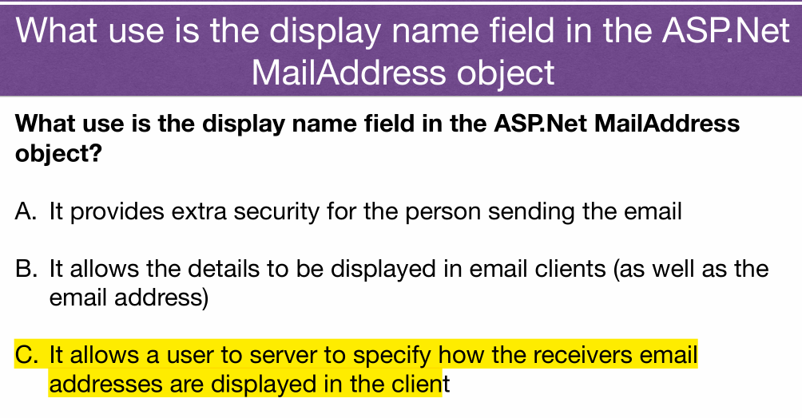
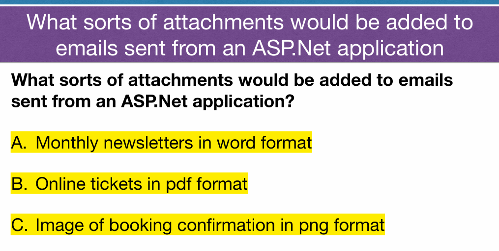
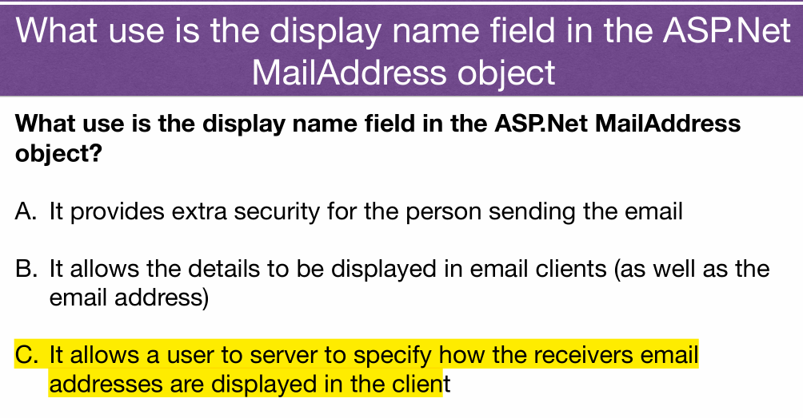
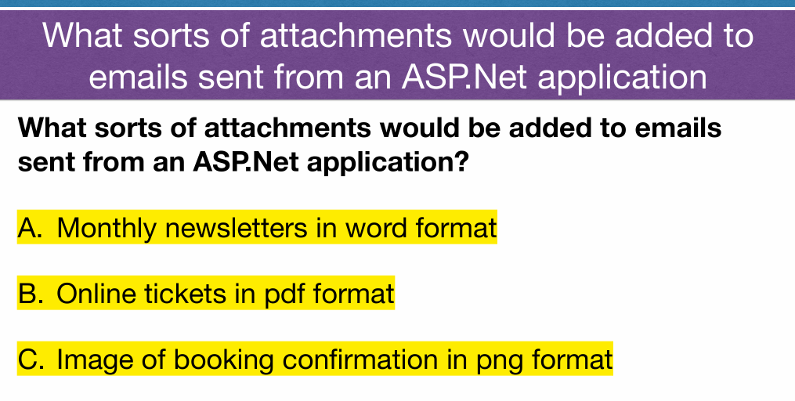


QA#
SignalR#
Real-time web functionality is the ability to have server code push content to connected clients instantly as it becomes available, rather than having the server wait for a client to request new data 实时返回数据不用刷新 server update后立即发送
chat room dashboard
 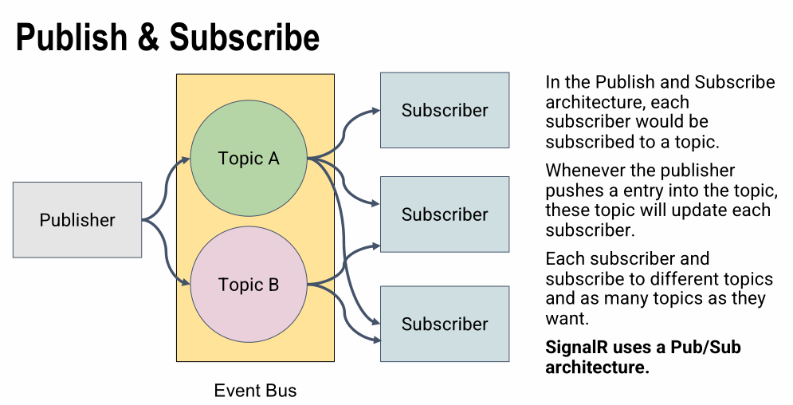
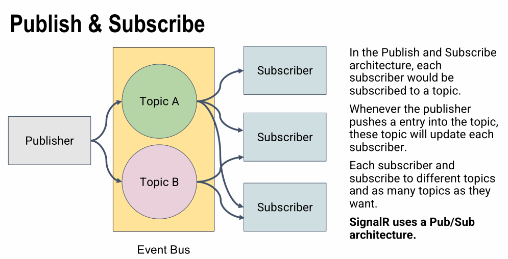


FIT5032 Week 9 Web Optimisations#
Lecture Note#


QA#
How to implement web optimization#
- Reducing HTTP Connections Each connection and request is time consuming and takes resources
- Reducing File sizes Larger file sizes take more bandwidth (and time) to down load
- Caching Can reduce the need to request a resource that has already been down loaded
- Perceived Improvements Some changes can be made that does not improve absolute performance, but makes the user believe there is an improvement (due to lower latencies and quicker perceived response time)
how to Reduce HTTP request#
- Combing images
- Reduce the size of files
- Making JavaScript asynchronous
<script async src="foobar.js"></script>
Minify CSS and JavaScript#
Minify:
Removing unnecessary characters from your HTML White space characters New line characters Comments Block delimiters
Uglify
Changing variables and functions with long names into shortnames Can act as an obfuscator, but is just a simple replacement
Bundle
Bundler combines multiple files into a single file Often used with minify and uglify
★★★ What’s difference between async and defer in render JS? / How to render JS without block body content render? / When use async instead of defer?#
Defer 会在（dom 树加载之后）按顺序执行，Async 会在下载结束之后立即执行
Use the async or defer JavaScript to avoid render blocking. *Does not mean the webpage is fully loaded before JavaScript is executed
<script async src="foobar.js"></script>
Deferring JavaScript Ultimate goal is loading or parsing JavaScript only after page content has loaded
★★★ What is differ between APS.Net Framework and ASP.NET Core?#

FIT5032 Week 10 Modern JavaScript#
Lecture Note#


QA#
★ How to communicate from client and serve#

architecture between traditional and modern web application#

What is API?#
API stands for application programming interface, which is a set of definitions and protocols for building and integrating application software.
APIs let your product or service communicate with other products and services without having to know how they’re implemented.

API Features?#
- Platform independence. Any client should be able to call the API, regardless of how the API is implemented internally. This requires using standard protocols, and having a mechanism whereby the client and the web service can agree on the format of the data to exchange. 无论platform 任何client都可以使用API获得数据
- Service evolution. The web API should be able to evolve and add functionality independently from client applications. As the API evolves, existing client applications should continue to function without modification. All functionality should be discoverable, so that client applications can fully utilize it. API与用户application 当API改变时 程序可继续使用 (不改变对应function的名字)
Why use API?#
- Easy to read and work with
- Hard to misuse
- Complete and concise
https://swaggerhub.com/blog/api-design/api-design-best-practices/
★ What is web API?#
A unique type of interface where the communication takes place using the Internet and Web-specific protocols such as HTTP 使用网络协议通过Internet连接API
The API defines a set of endpoints, request messages and response structures. XML and JSON are two examples of response media types.
★★★ What is restful Web Service/API? Benefits/WHY? Features?#
 What is:
What is:
+ Representational State Transfer (REST) as an architectural approach to designing web services.
+ REST is independent of any underlying protocol and is not necessarily tied to HTTP. However, most common REST implementations use HTTP as the application protocol
Advantage:
+ A primary advantage of REST over HTTP is that it uses open standards, and does not bind the implementation of the API or the client applications any specific implementation 只要能生成HTTP request 都能使用 API
+ Separation between the client and the server: Separates the user interface from the server and the data storage 用户界面与服务器和数据存储分离
+ Visibility, reliability and scalability. Each development team can scale the product without too much problem. They can migrate to other servers or make all kinds of changes in the database, provided the data from each request is sent correctly 易扩展迁移
+ The REST API is always independent of the type of platform or languages: the REST API always adapts to the type of syntax or platforms being used 兼容性好
Common HTTP Methods used by RESTful APIs#


Benefits of JavaScript Frameworks#
- Some frameworks customised for: mobile devices; single-page applications
- With cross-compatibility issues of web browsers
- JavaScript frameworks provided the standard API’s
- More recently standards such as HTML5 allow even more portable applications
Single Page Applications#
- Allow all functionality to be in one page
- HTML page, JavaScript, CSS etc loaded on first page load Dynamic (ajax) interaction with the server Retrieves data from webservice (normally)
- User interface control moves from server to the client
Why use Angular JS? Features?#
- Built in data binding Bi-directional data binding, from model to view and view to model
- HTML as template language for views
- User interface (UI) model and controller handled by the Browser No need to contact server for these UI based updates New views can be rendered without server interaction
Components
+ ng-app − defines and links an AngularJS application to HTML.
+ ng-model − binds the values of AngularJS application data to HTML input controls.
+ ng-bind − binds the AngularJS Application data to HTML tags
FIT5032 Week 11 testing#
Lecture Note#


 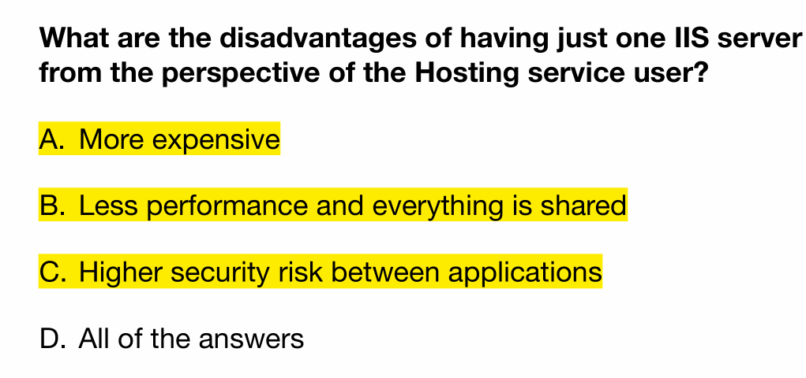
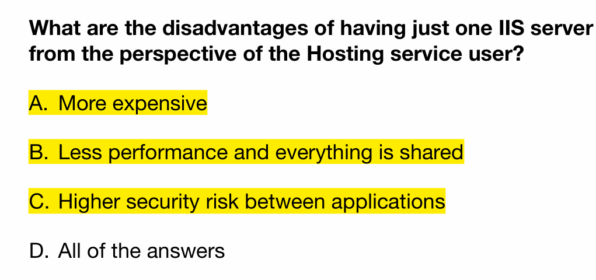


QA#
★ Development Pipeline#
 + During development using internal Visual Studio embedded webservers and database servers
+ When hosting web application, full IIS and database needed
+ Depending on service provided; If just platform provided then need to manage IIS and databases; If service provided, then just need to manage software; If software provided, then just need to manage data
+ During development using internal Visual Studio embedded webservers and database servers
+ When hosting web application, full IIS and database needed
+ Depending on service provided; If just platform provided then need to manage IIS and databases; If service provided, then just need to manage software; If software provided, then just need to manage data
Modern Development Practices#


 + Modern applications are developed using Continuous Integration & Continuous Development CI/CD reference
+ Modern applications are developed using Continuous Integration & Continuous Development CI/CD reference
+ CI merge their changes back to the main branch as often as possible.
+ CD automatically deploys all code changes to a testing and/or production environment after the build stage.
+ CD every change that passes all stages of your production pipeline is released to your customers
+ Integration, merge commit into develop 在“集成”期间很少且经常执行的步骤的实践，而不是等到代码完成后再将所有代码组合在一起并进行测试。
+ Delivery, release after a mount of time or amount of requirement branch merged into dev branch Decide which requirements or function can be release at this version. 持续交付建立在通过持续集成建立的构建和测试自动化的基础之上。
+ Deployment, upload the app package like apk to Google app store or web server. Install new app in the web server, replace the old version.持续部署将持续集成和交付的实践得出其合乎逻辑的结论：
What is test? Why test?#
- Software testing is a way to assess the quality of the software and to reduce the risk of software failure in operation
- A defect (fault or bug) in the software code or in some other related work product.
- An error that leads to the introduction of a defect in one work product can trigger an error that leads to the introduction of a defect in a related work product.
- If a defect in the code is executed, this may cause a failure, but not necessarily in all circumstances.
Functional vs Non-Functional Testing#
- Functional testing involves tests that evaluate functions that the system should perform. The functions are “what” the system should do.
- Non-functional testing of a system evaluates characteristics of systems and software such as usability, performance efficiency or security. Non- functional testing is the testing of “how well” the system behaves. This is often called quality requirements

Test Techniques#

Blackbox#
- based on an analysis of the appropriate test basis (e.g., formal requirements documents, specifications, use cases, user stories, or business processes).根据不同document进行
- Black-box test techniques concentrate on the inputs and outputs of the test object without reference to its internal structure 只关注input和output不关注logic
Whitebox#
- an analysis of the architecture, detailed design, internal structure, or the code of the test object concentrate on the structure and processing within the test object. 根据结构跟processing进行测试
Experience-based test#
from the tester’s skill and intuition, and their experience with similar applications and technologies. 根据经验与熟悉程度进行测试
test Driven Development#

Test-driven development (TDD) is a software development process that relies on the repetition of a very short development cycle. 先写test case确定预期结果，再写代码，然后用case进行测试
Hosting ASP.Net applications#
Several alternatives to hosting ASP.Net applications Host on your own servers； Manage webserver and databases
Host on a managed platform； Using webserver and databases provided by service provider
Host on Cloud platforms such as Azure； Platform exposes services such as webserver and databases
One Server shared by all hosts
• Each host given a different virtual directory
• Even though on one machine each host can have own domain address
• Independence of different applications enforced by security
constraints
Many virtual machines each with own Server
• More popular modern method
• Reduces the likelihood of applications interfering with each other
• May be more resource intensive than a single share IIS server
IIS / Kestrel servers#
IIS is the default webserver for ASP.Net application in Windows. Many service providers have IIS based hosting.
Kestrel is a cross-platform web server for ASP.Net Core.
• Included by default in ASP.NET Core project templates.
• Other hosting options for ASP.Net Core
• Windows services without IIS
• Linux with Nginx as reverse proxy
• Linux with Apache as reverse proxy
Deploying to host platform and DB connection#
Deploying to a host platform
+ Essentially copying files to the relevant directory/folder on the server
+ Often automated by a one click deploy application
+ Needs to be configured to the correct webserver (often copied via ftp etc
Database configuration
+ Database must be set up on the host.
+ Need to export database definition and any data from Visual Studio internal SQLServer
+ Import database definition and data into the hosted SQLServer
FIT5032 Mock Exam#
m1 What is the role of the layout file in an ASP.Net MVC application#
link to section★★★ What is the role of the layout file in an ASP.Net MVC application? / How to design a website application in the same UI component, same heading image, same navigation bar?
In this file, render css and js in application level. Include the basic common UI component which are header section,navigation bar and footer section
m2 Briefly describe how the bundling of CSS and JavaScript files is implemented in ASP.Net MVC applications#
link to section★★ Briefly describe how the bundling of CSS and JavaScript files is implemented in ASP.Net MVC applications
+ Firstly register the CSS and JS in the bundleconfig.cs file and rename script bundle name. This bundle allow include multiple js or css files
+ Secondly use @Style.Render and @Scripts.Render to render/import css/js in the html page. Then the imported css and js can be used in this web page
m3 How to make ASP.Net website responsive#
- First need to have bootstrap in your project.
- Define the container width in bootstap.css according with different screen width.
- Use this css container as
<div>style
m4 In terms of internet application development what do we mean by Navigation (from the Flow Bohl usability categories)#
link to section ★★ Web Usability Guidelines (from Flow Bohl)
Visual cues should be in place that set priorities and guide a user into the desired direction. A user will likely ask 'where am I?' or 'how can I get where I want to go'. Knowing what users expect and organizing the content accordingly is key to good information architecture and UX design
m5 When would a required field validation be used in an application? In your example, what error message would you give if the validation failed? (How about Compare/Regular Express)#
link to section Validation in Views
link to section Validation in Models
When a field should be required(not null or empty) in the entity, we need to set required validation
[Required(ErrorMessage=”This is required field!”)]
@Html.ValidationMessageFor(model => model.Name, "Please Enter a Name", new { @class = "text-danger" }
m6 When would a Data Type validation be used in an application? In your example, what error message would you give if the validation failed#
link to section Validation in Models
When a field should be a specific data type in the entity(so as in model), we need to set data type validation.
[DataType(DataType.Date, ErrorMessage = "You can only enter date format")]
m7 What is the difference between String and string data types in ASP.Net MVC Applications#
link to section What is difference between String and string
string is an alias for String. In application, there is no difference in using either. PS: String used to access build in function in String class Sting
m8 Briefly describe the role of OAuth in ASP.Net Identity implementation. Give an example#
link to section OAuth
OAuth provide a third-part Authorization and Authentication service
1. When user log in, app redirect to Google Oauth Service page.
2. User enter Google identity(username and pwd)
3. Google Oauth service identify the Google username/pwd
4. If identify succeed, redirect back to app and tag Authorization success, the user passed the authorization and authentication(also return group tag)
5. If identify failed, report invalid username/pwd, redirect back........ (E.g 403)
**PS: This significant secure/efficient the Authorization and Authentication in app.
m9 What are the main high level differences between a standard ASP.Net MVC application and an ASP.Net application that uses the Web API#
link to section ★ What is web API?
link to section Benefits of JavaScript Frameworks
other reference
+ MVC returns the rendered view(html page) to client browsers. The returned view controlled by controller in server.
+ Web API only return data in json or xml to client SPA(JS framework). The action invoked by http method in JS function(AJAX).
m10 Give two example scenarios where in one the async method is preferred and in the other the defer method is preferred#
link to section ★★ HTML defer
link to section ★★ html async
- Defer: A.js need to download data and B.js need to assign data in the UI component or other logic based on data. This requirement need sequence execution, so use deffer tag
- Async: Like import / load Google analysis JS lib, this lib does not depend on any other lib, so use async tag to execute js as soon as it downloaded completed
m11 Identify 3 usability features of an application that can be implemented to support a novice (new) user of an Internet application. Briefly describe each#
link to section What function/UI component can implement usability in Web application
- Tool Tips Displayed Text when user hovers over element
- Tab Index Allows a user to tab through user input fields in a specified order
- Hot Keys Hotkeys allow the user to jump to a specific input element based on the key pressed
m12 Briefly discuss the role of code testing framework in Continuous Integration and Continuous Delivery/Deployment in relation to modern ASP.NET MVC applications development#
link to section Modern Development Practices
m13 Briefly explain how models can be used to represent data in ASP.Net MVC application#
link to section ★★★How to bind data from http request to method parameters?
Entity represent Model in the EF. Use LINQ to CRUD data from DB.
View shows data by binding model in controller(Use entity/model to CRUD data)
m14 Describe how Models, Controllers and Views can be automatically generated from the database. Clearly identify the different Actions (and related Views) that can be automatically generated#
link to section What is Entity Framework / benefit / Why use?
link to section ★ Advantages and Disadvantages of DB First
Using EF generate model from Database, this is database first approach.
Then generate controller and view from models using scaffolding
m15 How can an AngularJS client in the ASP.Net MVC application consume the Web API endpoint? Briefly describe the approach#
link to section Common HTTP Methods used by RESTful APIs
1. User access html page.
2. Html page render js file
3. In the JS function method, invoke angular JS controller to access api and receive response data
4. Use Angular bi-directional data bind data from view and ng-model
5. Display data in html
m16 Discuss three differences between ASP.NET Framework MVC and ASP.NET Core#
link to section ★★★ What is differ between APS.Net Framework and ASP.NET Core?
b1 Identify the main components you will use in your application. 7 marks#
- Model: aim to data storage, integrity,CRUD data from DB
- Controller: Mapping/update view, validation, link model and view
- View: presentation logic
- IIS server
- SQLServer
b2 Briefly describe how to combat XSS (Cross Site Scripting) and CSRF (Cross Site Request Forgery) for this application#
link to section Cross Site Scripting (XSS)
link to section Cross Site Request Forgery (CSRF) Attack
XSS: .NET has build in XSS protection, no need to add more. Keep default to set [ValidateInput(true)]
CSRF: Add @Html.AntiForgeryToken() in the view, to set signature in html view Add [ValidationAntiForgeryToken]to valid the signature in controller
b3 Discuss a use case for real time interaction with end users using SignalR#
link to section SignalR
Chat room.
One user send a message and server push this message to all clients who has subscribed.
b4 Briefly discuss how would you ensure quality using code testing framework#
link to section Modern Development Practices
Black box Testing, white box testing
Continuous Integration, merge commit into develop
Continuous Delivery, release after a mount of time or amount of requirement branch merged into dev branch
Decide which requirements or function can be release at this version.
Continuous Deployment, upload the app package like apk to Google app store or web server.
Install new app in the web server, replace the old version
FIT5032 exam note#
1. Why use MVC, explain MVC feature Separation of concerns(Soc) and Single Responsibility Principle#
link to section ★★ Advantages of ASP.NET MVC = Why use MVC? = MVC benefit
link to section Separation of Concerns (SOC) 依据功能分成独立几个模块开发
link to section Single Responsibility Principle (SRP) 每个模块如何划分 class， reuse
(前端可使用逻辑) (职能可分开)(以method为单位 容易写test)(容易集成js框架)
SOC: each section addresses a separate concern; simplifying development and maintenance; individual sections can be reused, as well as developed and updated
SRP: very module, class or function in a computer program should have responsibility over a single part of that program's functionality,
2. Why use layout file, what differ in using layout file? Differ between other html?#
link to section ★★★ What is the role of the layout file in an ASP.Net MVC application? / How to design a website application in the same UI component, same heading image, same navigation bar?
- Razor views use a layout to determine their look and feel
- The default view is held in Views/Shared/layout.cshtml
- header; footer; navigation bar
-
3. Advantage and Disadvantage of Code first,model first and DB first, brief explain the flow of each#
link to section Development Workflow
link to section ★ What is Model First Approach
link to section ★ What is Code First Approach
link to section ★ Advantages and Disadvantages of DB First
4. How to navigate page in ASP.NET MVC? (usability branch, implement branch)#
link to section ★★★ How to handle request in ASP.Net MVC?
5. How to use regular expression validation?#
link to section Regular Expressions
6. What is jQuery? Why use it?#
link to section jQuery Unobtrusive Validation
add validation to our MVC views
pnce you have included server side validation via validation attribute, the client side scripts to validate the forms will be automatically generated
7. Demo how is SQL injection and how to prevent it.#
link to section Cross Site Scripting (XSS)
- ASP.Net MVC has built in checks to ensure scripts are not submitted via user input [ValidateInput(true)]
8. What does controller action method do?#
An action (or action method) is a method on a controller that handles incoming requests. Controllers provide a logical means of grouping similar actions together, allowing common sets of rules (e.g. routing, caching, authorization) to be applied collectively. Incoming requests are mapped to actions through routing
9. Describe Identity flow you used in your assignment. (Include DB structure)#
link to section ★★How to implement Identity in ASP.Net MVC
link to section User Account Tables
10. How to convert .Net MVC to .Net Web API?#
11. What is Continuous Integration/Continuous Delivery/Continuous Deployment?#
link to section Modern Development Practices
CI merge their changes back to the main branch as often as possible.
CD automatically deploys all code changes to a testing and/or production environment after the build stage.
CD every change that passes all stages of your production pipeline is released to your customers
12. Cons and pros of Angular JS#
link to section Why use Angular JS? Features?
The pros and cons of choosing AngularJS
改进的服务器性能
更快的应用程序原型设计
必须支持 JavaScript
学习困难
13. Demo example of SignalR and explain what is subscriber?#
link to section SignalR
Chat room.
One user send a message and server push this message to all clients who has subscribed.
14. Web Optimized manners, list 3#
link to section How to implement web optimization
- Reducing HTTP Connections Each connection and request is time consuming and takes resources
- Reducing File sizes Larger file sizes take more bandwidth (and time) to down load
- Caching Can reduce the need to request a resource that has already been down loaded
- Perceived Improvements Some changes can be made that does not improve absolute performance, but makes the user believe there is an improvement (due to lower latencies and quicker perceived response time)
15. Why use ASP.NET Core?#
link to section ★★★ What is differ between APS.Net Framework and ASP.NET Core?
用于构建 Web UI 和 Web API 的统一故事。
为可测试性而设计
能够在 Windows、macOS 和 Linux 上开发和运行。
开源和以社区为中心。
现代客户端框架和开发工作流程的集成。